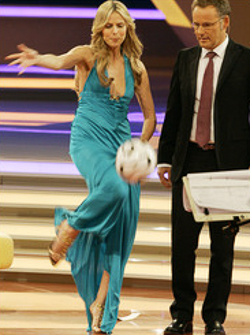
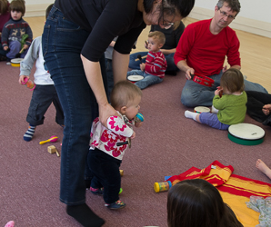
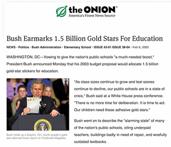
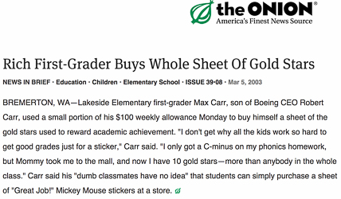

How to Be an Extraordinary Teacher
For tenure-track professors at research-focused universities, teaching is not considered an important part of your job. So long as you don’t do so badly to engender a stream of complaints to your dean, being a mediocre teacher is unlikely to harm your tenure case; even if you are a spectaular teacher, it won’t help make up for weaknesses in your research record.
So, if the only thing that matters to you is getting tenure, you should aim to teach at a level just above the “threshold of embarrassment”, and skip the rest of this section. Hopefully, however, you came to a university because you want to teach, and will find teaching to be the most rewarding, fulfilling, and impactful aspect of your career.
If you aren’t sure if you find teaching gratifying yet, its worth putting in the energy to be an extraordinary teacher at least once to discover if you do. I’ve seen too many new faculty start their tenure-track positions overly stressed out about getting research funding and being advised not to spend too much time teaching. This inevitably leads to a bad first teaching experience, and the victims concluding that they shouldn’t care about teaching but instead should treat it as a necessary burden of their faculty position. If you find you really don’t enjoy teaching enough to want to do it well, you’d be much better off finding a position that does not expect you to teach.
How to Teach Extraordinarily
The good news is that the standards of teaching in US universities are so low in general, that it doesn’t take much to be extraordinary.
Two simple steps are enough to get over that threshold:
- Respect your students’ time.
- Focus on how you want to impact students five years from now, not on what they can do sitting on an uncomfortable chair for a few hours at the end of the semester.
Most other things follow from these two premises.
How (and Why) to Respect Students’ Time
Respecting students should go without saying (or at least, it is said frequently enough to be “consensus advice”), but the key to respecting people is respecting their time.
The power imbalance between faculty and students leads to many faculty behaving in ways that are tremendously disrespectful of students’ time and getting away with it. Sometimes professors seem to intentionally do things to waste students’ time just to clarify how powerful and important they are. This is cruel and misguided.
Come to Class Early. I’ve observed many classes where the professor arrives a few minutes after the scheduled class time, fumbles around hooking up a laptop to a projector, searches for some slides to display, and finally gets class started several minutes late. Expecting dozens of students to sit around for several minutes waiting for class to start is not respectful of their time, and sends the dangerous message that you don’t think class time is valuable.
End Class On-Time (or Early). Going over the scheduled end-time is less bad than arriving too late to start on time, but similarly disrespectful of students’ time. The way to end on time isn’t to rush through whatever you thought you would cover that day to get to the end as you planned. Instead, if you notice time is running low, slow down, find a reasonable place to stop before class time expires, and ask for questions. I’ve never heard anyone complain when a lecture or talk ends a bit early.
Don’t Assign Busywork. The point of assignments is to provide good conditions for students to learn interesting, valuable, and important things. Don’t assign tasks just to have something to grade. Be flexible in your assignments, so students for whom the standard assignment would not be worthwhile can do something else.
Don’t Be Oblivious. I took my two-year old daughter to a ballet class recently where the teacher started by telling us about her illustrious ballet career and then tried to teach the toddlers the ballet positions and have them follow complex directions holding onto a barre. She was completely oblivious to the obvious fact that none of the toddlers were paying any attention to this and just wanted to run around, spinning in their tutus. As a university teacher, your students are not nearly as good as the toddlers in providing immediate and clear feedback when what you are doing isn’t appropriate. But, they still provide fairly clear signs when things are off, and (unlike the toddlers) you can always stop and ask them what’s wrong if it seems like no one is getting it. If you don’t get a useful response, maybe they are just tired, so ask them to stand up and move around (this works, even in large classes).
Spend a Ridiculous Amount of Time Preparing Lectures.1 The consensus advice (which I heard from many people, but also find written down) is to spend about 2 hours of preparation time for each hour of class time. This is probably good advice if your goal is to be squarely in the “trough of mediocrity” (and, probably wasting time, since a lecture you spent 15-60 minutes preparing would probably get over the embarrassment threshold, and may well be better than the one you spend 2 hours preparing).
There may be some people who can prepare great lectures that quickly, but I have never been able to (and I hear similar things from everyone I know of who does great lectures). I find that I need at least 10 hours to prepare a new lecture I’m not embarrassed by, and often 20-30 hours to prepare one I consider good. I find time spent preparing a lecture, especially on a topic that I don’t already know much about, to be very fun and worthwhile.
I used to feel guilty about spending too much time preparing lectures, and was frequently told it was foolish to do this, but have concluded that spending sufficient time to prepare lectures that I’m satisfied with is justified not just for selfish reasons of personal pride. One way to justify it, at least in larger classes, is to divide your preparation time by the number of students in the class. Spending 10 hours to prepare a lecture for a 100-person class seems much more reasonable when viewed as 6 minutes per student.  It gets better if you amortize the cost of multiple iterations of the same course; it still takes quite a bit of time to prepare to “reuse” an old lecture (with improvements and adaptations), but a lot less than the time to prepare a new lecture.
Additional justification comes from making materials you prepare for your lectures available to an audience beyond just your class. Many gratifying and unexpected things can come from this, ranging from other faculty finding and adapting your course materials to achieving your lifelong dream of making the sports pages of the New York Times.
Finally, aside from satisfying my own curiousty, it is also the case that I often get research ideas when preparing lectures on topics far afield from my normal research.
(I won’t include anything here about actually developing lectures, but I agree with most of the advice from Meta Talk: How to Give a Talk So Good You’ll Be Asked to Give Talks About Nothing.)
How to Have Long-Term Impact
If your goal is to just teach mediocre classes that get across some material to your students, you should consider if your time would be more effectively spent by holding office hours during the time you would spend preparing and giving mediocre lectures, and encouring the students to read and watch recorded classes rather than being bored in class.2
Hopefully, you do want to be an extraordinary teacher, and that means doing things that aim to have a more significant and longer term impact on your students and the world beyond. Achieving this is very rare, and I can’t claim to have a high success rate on this, but it is still worth aspiring to since when it actually works out it is the most rewarding and fulfilling thing you can do.
 Aspire to be more like baby music class than a typical university lecture. Don’t fall for all the hype about “active learning” and end up wasting most of class time with low-value activities, but realize that the traditional lecture model is a very challenging learning environment for most people. Find ways to get students to move around, learn from each other, have fun, and work within students’ actual attention spans.
Don’t Teach to the “Middle”. Teaching to the middle gives everyone a mediocre experience. You should aim to construct classes in a way that ensures everyone in the class gets the most important, biggest ideas, and that even the most advanced students are challenged by something every class. One of the main challenges you face as a university teacher is finding a way to avoid losing or overwhelming the least advanced students, without making things boring for the most advanced ones. Targeting the middle is the worst solution to this, serving no one in the class well.
Bring the World into Your Classroom and Bring Your Classroom into the World.
How to Grade
Many professors spend a huge amount of time and stress on grading. I can think of few things less worthwhile to spend time on, but many faculty fall into the trap of responding to student complaints about grading being vague or unfair by adopting increasing painstaking and demoralizing grading rubrics and complicated “regrading” protocols for students and professors to spend time quibbling over points.
The point of grading is to provide students with useful feedback, not to allocate and deduct points for trivial things. There is no need to grade every question, or figure out a detailed points-based grading rubric.
I recommend this simple “gold-star” grading scale for most assignments: 
| Grade | Meaning |
|---|---|
| ★ | Excellent work |
| ★ | Got what you should out of this |
| ★ | Decent effort, but some serious problems |
Inevitably, someone will ask what the “average” on an assignment was.
It should be a murky goldish-greenish-silver star.
I don’t want to limit expectations, though, so the top of the scale is unbounded:
| Stars | Meaning |
|---|---|
| ★★ | Exceptional! |
| ★★★ | Better than I though possible. |
| ★★★★ | True breakthrough! |
| ★★★★★ | Breakthrough of Gaussian Proportions! |
Using a simple, star-based grading system will save you from lots of unnecessary suffering and unpleasantness.
If you are worried that such a system will not provide enough fine-grained data for you to adequately distinguish the B+, B, and B- students at the end of the semester, you should reconsider whether or not it is really so important for you to do that. These differences only matter to mediocre companies with misguided hiring practices, and you should hope your students find more interesting places to work.
In introductory courses, there are three “grades” that matter:
- Identifying superstar students who you want to recruit to your research group. (A+ final grade, and letter)
- Sending a signal that students should take more classes in your discipline and consider it as a major. (A)
- Indicating that a student put forth a reasonable effort, but is likely to find something else better suited to their talents and abilities. (B)
- Lower grades for cases where students either demonstrated clear incompetence or unacceptable effort.
For more thoughts on grading for more advanced classes, see the wrapup for my OS class. If you get any complaints about “grade inflation”, see A new generation of students.
For Whom Are You Teaching?
Most people think this is a silly question — obviously, you are teaching for the students sitting right in front of you. But, that’s the wrong answer!
The students in your class are the most immediate victims or (hopefully) beneficiaries of your teaching, but, at least if you are a faculty member at an elite public university3, they are not the primary people you are teaching for.
Your salary is mostly not paid from those students’ tuition, and by being able to attend your university, those students are already in the lucky (and hopefuly deserving!) elite of society, nearly all of whom will go on to lucrative and pleasant careers whether or not they took your class. The reason countries and states have public universities (or provide public support to private ones), is not so a handful of selected students can obtain some vocational training and earn a recognized credential. It is so some of those students go on to do things that make the world a better place for everyone.
You should, of course, care about your students and want them to be successful at individuals. But, keep in mind that your real purpose is to do things that serve the public at large. This should predispose you to make all of your teaching materials open (posted on public websites), risk trying new things (even if there is some chance it will have negative consequences for your current students), and invest in things that will have long-term, external value even when it takes time away from immediate value for your classroom students.
- I’ve had the luxury of light teaching loads, where I am expected to teach at most one class a semester (and often only expected to teach a small seminar). This is common for computer science faculty at research-focused universities, but may make my advice here seem unreasonable for someone who has to teach several courses at once. I have a lot of sympathy for people with such heavy teaching loads, but don’t really know how to manage this without making a lot of compromises. [return]
- Depending on your institution and status, you might risk losing your job if you actually do this. But, if the reason you are holding class is to avoid losing your job rather than actually provide some benefits to yourself and your students, perhaps it would still be a good risk to do this. [return]
- Here, “elite” means any institution where some of the applicants who satisfy some minimal threshold (e.g., have a high school diploma or equivalent) and are willing to pay are rejected. I expect the same beliefs apply for most private universities, but their missions are less clear and may vary enough for this not to always be true. [return]